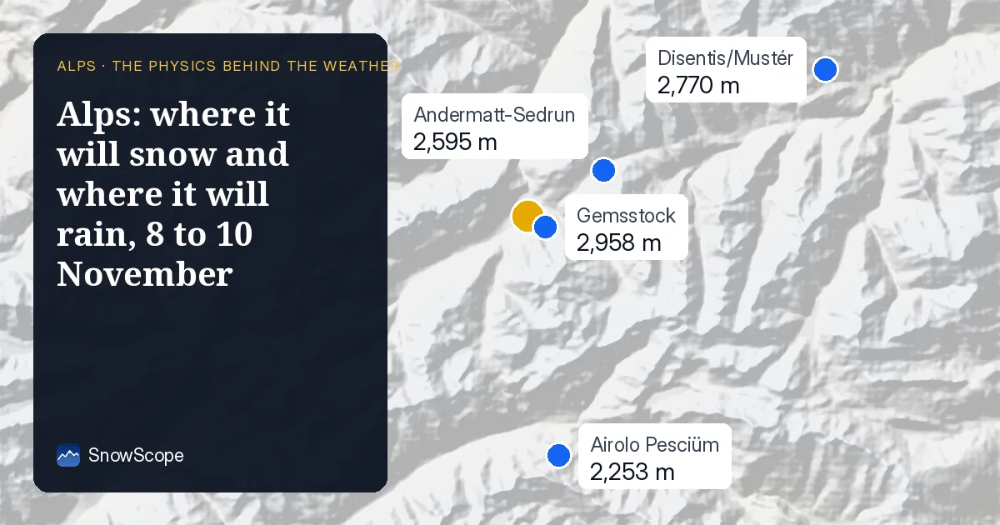
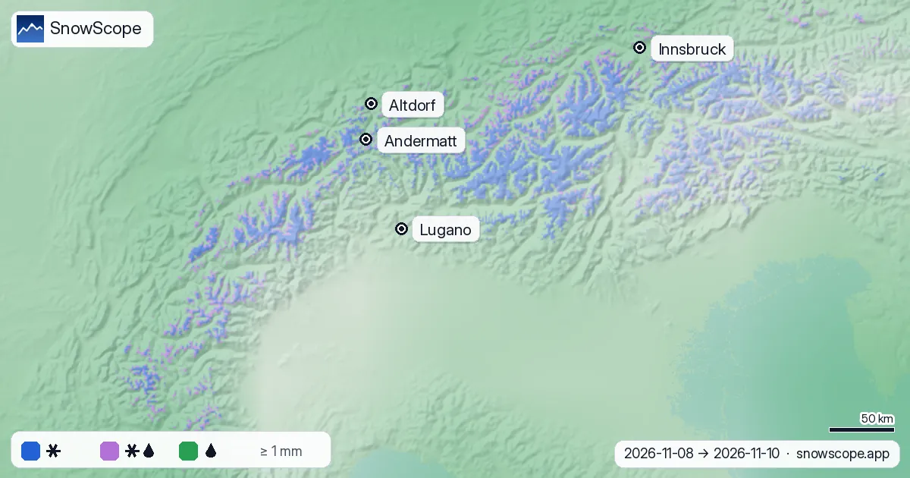
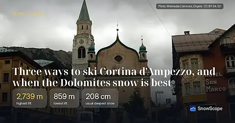

Alps: where it will snow and where it will rain, 8 to 10 November
A mild weather system will bring heavy precipitation to the Alps from Monday through Wednesday, but the freezing level stays too high for valleys and lower ski slopes. The snow line is forecast to stay between 2,190 and 2,850 m, so skiers below 2,500 m should expect rain.
See the live snow forecast for Andermatt in the SnowScope appSnow depth, powder alerts and the 3D map, free.

Snow above 3,000 m, rain below 2,000 m
The region's snow map shows how precipitation changes with height across the period. At 3,000 m and above, nearly all the rain will be snow. At 2,500 m a mix forms: about one third snow, one third wet sleet, and one third rain. By 2,000 m, almost nine tenths falls as rain. Valleys lie well below this line and will see only rain.
The median snow line sits at 2,540 m across the forecast window. This means that glaciers and high ridges will collect fresh snow while the ski runs in the 2,000–2,250 m band stay slushy or wet.


Show the numbers
| Height (m) | Snow % | Wet snow / sleet % | Rain % |
|---|---|---|---|
| 500 | 0 | 0 | 100 |
| 750 | 0 | 0 | 100 |
| 1,000 | 0 | 0 | 100 |
| 1,250 | 0 | 0 | 100 |
| 1,500 | 0 | 1 | 99 |
| 1,750 | 1 | 3 | 96 |
| 2,000 | 2 | 10 | 88 |
| 2,250 | 10 | 26 | 64 |
| 2,500 | 31 | 38 | 31 |
| 2,750 | 62 | 33 | 5 |
| 3,000 | 90 | 10 | 0 |
| 3,250 | 100 | 0 | 0 |
| 3,500 | 100 | 0 | 0 |
| 3,750 | 100 | 0 | 0 |
| 4,000 | 100 | 0 | 0 |
How temperature sets the boundary
Air temperature drops about 6.5 °C per kilometre of altitude. When precipitation falls through warm air, it melts before reaching the ground. The snow line lies roughly 300 m below the freezing level because falling snow takes time to melt completely. Around that boundary, a band of wet sleet or heavy, damp snow forms for about 150 m either side.
In this case, the freezing level during the wet hours sits near 2,730 m at Andermatt. The snow line therefore sits close to 2,430 m. South in the Lugano valley the freezing level climbs even higher, to 2,760 m, pushing the snow line up to 2,460 m.

Show the numbers
| Date | Andermatt (mm) | Altdorf (mm) | Lugano (mm) | Innsbruck (mm) |
|---|---|---|---|---|
| 8 November * | 0.0 | 0.0 | 0.3 | 0.0 |
| 9 November * | 6.2 | 11.3 | 0.3 | 2.4 |
| 10 November * | 8.5 | 16.6 | 3.6 | 6.9 |
| 11 November * | 2.3 | 0.3 | 1.5 | 0.0 |
| 12 November * | 10.0 | 7.8 | 17.9 | 7.1 |
When the precipitation arrives
Most rain and snow falls on 9 and 10 November. At Andermatt, the peak of the moisture flow occurs around midday on 10 November. Altdorf in the northern valleys receives 36 mm total (mostly on 9–10 November), while Innsbruck to the east gets 16 mm. Andermatt itself collects 27 mm, all of it falling above the base altitude of 1,444 m.
The wind during this period comes mostly from the south-west at speeds near 38–64 km/h, depending on location. This pushes moisture upslope on the southern and western faces of ridges.


What this means for each valley
Altdorf and other northern valleys lie at 450–580 m elevation. The freezing level there stays well above 2,100 m even at its lowest, so all precipitation falls as rain. Lugano in the south, at 300 m, is even warmer and also sees only rain. Neither location will add snow.
Andermatt, perched at 2,963 m, sits high enough that snow is likely on its upper slopes and ridges. The upper glaciers will be well within the snow zone. Mid-mountain terrain between 2,000 and 2,500 m will be the messy zone where wet snow, sleet and rain mix.
Early-season risks
Wet snow landing on thin existing snow cover can slide unexpectedly. If you ski above 2,500 m where snow is forecast, check for recent avalanche activity and read the official bulletin before going off-piste. Heavy, wet snow is heavier than dry snow and sticks to itself; on a slope with little base, it may hold but can release suddenly when conditions change.
Lower resorts with only rain will wash away any early-season coverage they have built. The next chance for snow depth across the region will come when the air mass behind this system cools down—likely in the days after 10 November if a cold front pushes through.
What it means for you
- Check the live snow map again before you travel; this forecast is from 7 November and weather patterns can shift.
- Above 2,500 m, stay aware of wet-snow instability: consult the official avalanche bulletin before any off-piste skiing.
- Resorts below 2,000 m will see mostly rain. If you have thin snow cover, expect washout and plan to revisit in colder weeks.
- Wind from the south-west will load lee slopes heavily with wet snow; north-facing slopes may fare better.
- Bring layers: the air is mild (up to 18 °C in Altdorf valley), so you will warm up as you descend.
About these numbers
Resort snow depths are the deepest snow on the resort's upper slopes on the date shown; they are estimates for an area, not a measurement at one point. Forecasts can change. Always read the official avalanche bulletin before going off-piste.
Cite this report
For research, teaching or the press: the numbers and charts are free to reuse under CC BY 4.0 with this citation.
SnowScope (2026), Alps: where it will snow and where it will rain, 8 to 10 November, https://snowscope.app/blog/en/2026/11/alps-where-it-snows-where-it-rains-8-10-november-2026.html, accessed 2026-11-08
SnowScope (Atlas Labs). (2026, November 8). Alps: where it will snow and where it will rain, 8 to 10 November. SnowScope snow reports. https://snowscope.app/blog/en/2026/11/alps-where-it-snows-where-it-rains-8-10-november-2026.html
BibTeX
@misc{snowscope2026alpswhereitsnowswhereitr,
author = {{SnowScope (Atlas Labs)}},
title = {Alps: where it will snow and where it will rain, 8 to 10 November},
year = {2026},
month = nov,
howpublished = {\url{https://snowscope.app/blog/en/2026/11/alps-where-it-snows-where-it-rains-8-10-november-2026.html}},
note = {Published 2026-11-08 10:53 UTC; accessed 2026-11-08}
}· CC BY 4.0 · Methods, data and tools →
Follow Andermatt
Free: a message when fresh snow is coming, and the forecast every morning.
More snow reports

Davos and Klosters share six ski mountains. A day-by-day plan, starting on Parsenn, with what 46 past winters of our snow history say about its heights.

When to book Courchevel and the 3 Vallées, which village to stay in and where the snow lasts, planned from 46 past winters of snow data.

Cortina d'Ampezzo three ways: Tofana, Faloria-Cristallo and Cinque Torri-Lagazuoi, with 46 winters of snow data at three heights.